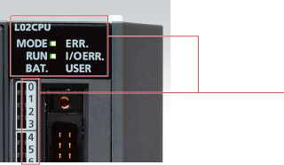
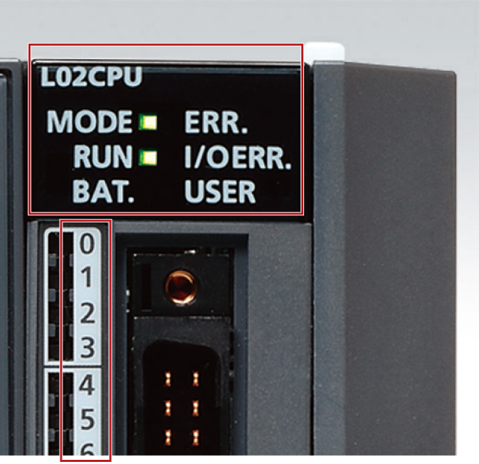
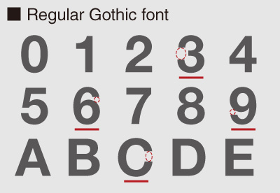
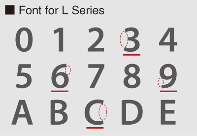

Controllers MELSEC-L Series
Product features -CPU-

Universal design
Adopting a universal font
A high visibility font has been chosen for characters printed on system modules.


The characters are thick enough, however the numbers “3, 6, 8, 9” and the alphabet “C” are not clearly distinguishable because the spacing indicated with a red circle is not large enough.

The space indicated with a red circle has been enlarged.
The numbers “3, 6, 8, 9” and the alphabet “C” are clearly distinguishable.
Characters are legible even in small print.
Module design
White and red are used to distinguish inputs from outputs respectively to allow for easy identification of terminal connection type.
White for input module
Red for output module
Easily identify module status
LEDs display the current status of modules including run and error states.